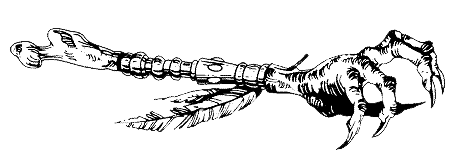

« Mais que faites-vous donc dans cette maison ? hurle-t-elle ; si vous
ne
partez pas de vous-même, mes chiens se chargeront de vous raccompagner.
Et
s'ils devaient échouer, comptez sur moi pour le faire ! » A ces mots, un
panneau de bois glisse le long d'un mur, et deux GRANDS DANOIS
bondissent
pour vous attaquer. Préparez-vous à les combattre. Vous affronterez les
chiens l'un après l'autre.
HABILETÉ ENDURANCE
Premier
GRAND DANOIS 7, 6
Deuxième
GRAND DANOIS 6, 6
Si vous êtes vainqueur, vous pouvez ou bien quitter
la pièce , ou bien y rester pour l'explorer.
